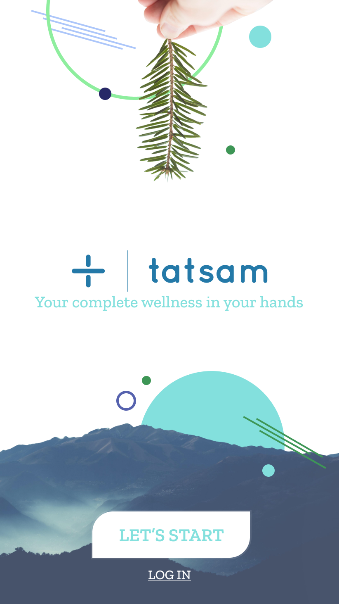
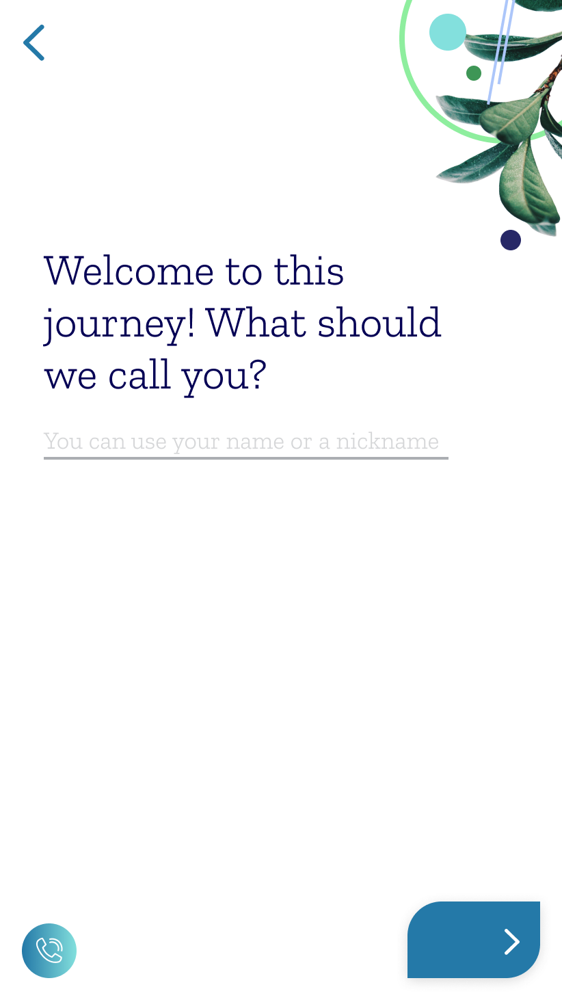
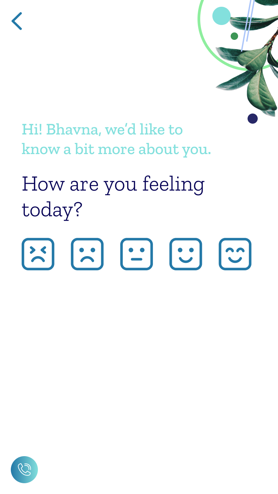
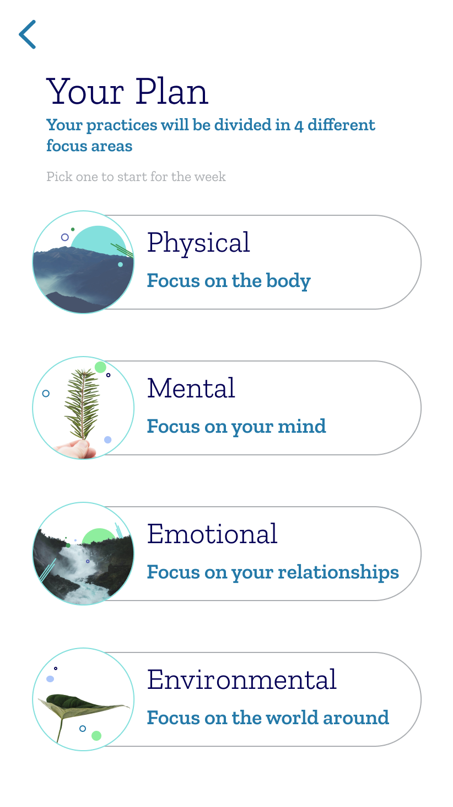
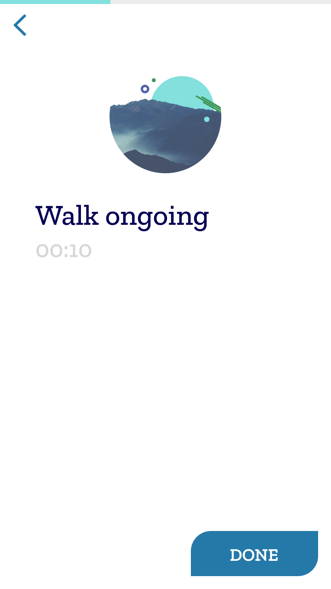
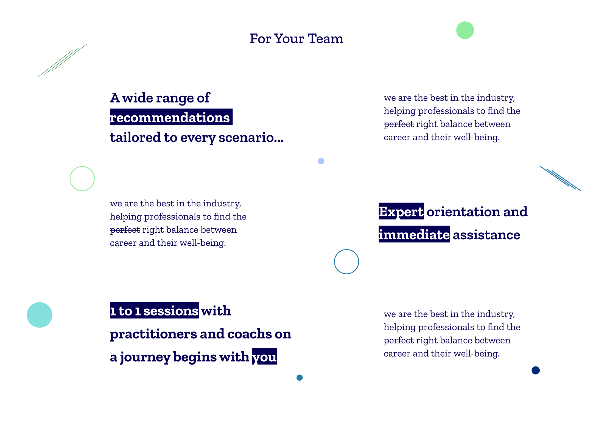

We designed Tatsam's whole product surface, code-ready: an onboarding that actually listens, two ways through (self-driven or guided), a recommendation engine, and a library of things to play and do — plus the marketing site that explains it in one scroll.
Onboarding asks your name, your time, and how you're feeling — then an interactive intro builds rapport before the product asks anything of you. From there, a recommendation hands you a single, doable thing.





The whole flow is built around one belief: the smallest doable step beats the perfect plan.
The marketing site lands the promise — "Holistic wellbeing for modern professionals" — in one scroll: what you'll have, what you'll find, and the exercises themselves, shown on-device.

A product still has to win the room.